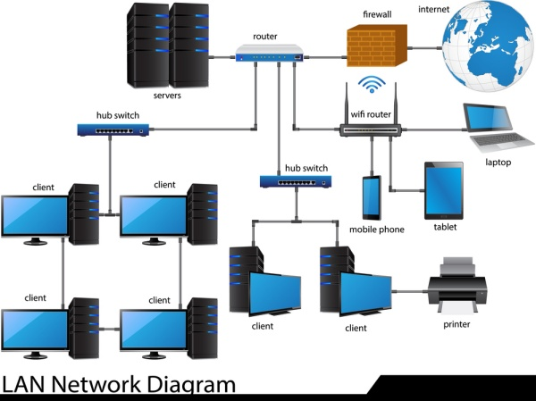

La rete LAN
La rete LAN (Local Area Network) è una rete di computer che copre un'area geografica limitata, come un edificio, un campus universitario o un'azienda. La rete LAN consente ai computer e ai dispositivi di comunicare e condividere informazioni tra di loro, come file, stampanti e connessione a Internet. Le reti LAN sono di solito composte da dispositivi come switch, router, hub e modem che consentono la connessione dei computer e dei dispositivi alla rete. Inoltre, le reti LAN possono essere cablate o wireless, a seconda del tipo di tecnologia utilizzata per la connessione. Le reti LAN sono molto utilizzate in ambito aziendale, dove consentono ai dipendenti di comunicare e condividere informazioni tra di loro in modo efficiente e veloce. Inoltre, le reti LAN sono utilizzate anche in ambito domestico per la condivisione di file e l'accesso a Internet tra i dispositivi della casa.
